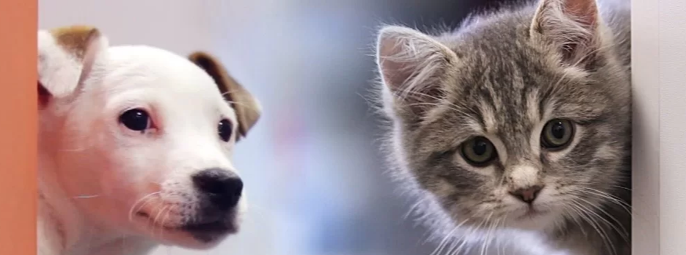

Tener un gato es una experiencia única y enriquecedora: Adopta un gato en nuestra fundación

Perros y gatos en adopción
Da y recibe cariño adoptando una mascota con nosotros
Somos una fundación sin fines de lucro que se dedica a conectar a personas que tienen animales (perros y gatos por el momento) con personas que deseen adoptarlos.